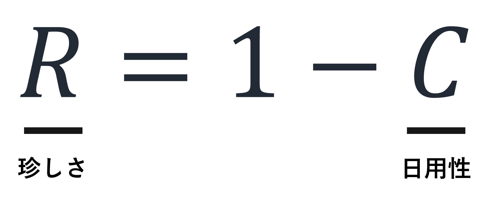
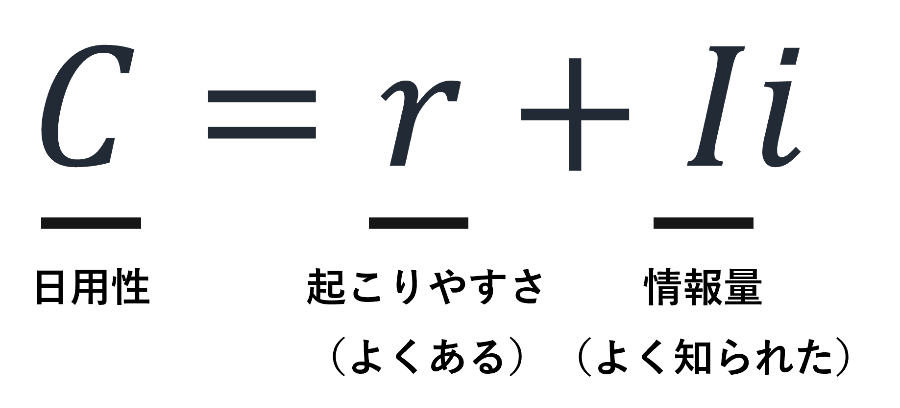
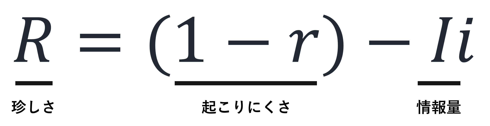
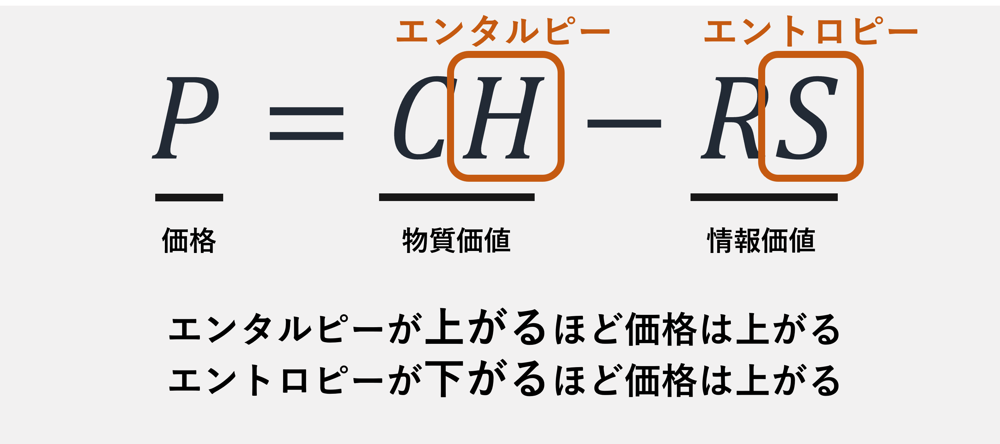
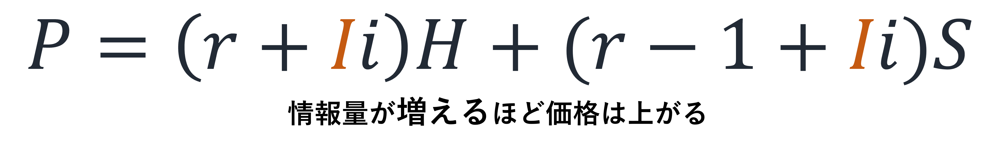

「珍しさ」の数理と経済学
人はなぜ物を買うのだろうか．珍しいからだろう．自分で調達できる物や世にありふれている物を大枚叩いて買い求めたりしない．物が必要だということは，今その生活環境において珍しいということ．買った物はそれを買った人にとって珍しかったのだ．そこで「珍しさrarity」という量を数式にできないかと考えた．珍しさと対になる概念が日用性commodityである．毎日当たり前のように使う物は日用性Cが高い．そこで，珍しさRを1-Cと表すことにする．
さらにCを「よくある」と「よく知られた」の和として定義する．よくあるとは確率すなわち起こりやすさであり，よく知られたとは情報量である．そうするとRは起こりにくさから情報量を引いた値となる．
珍しさは相対的な量である．ある地域にあまりないものは珍しいけど別の街ではありふれているかもしれない．ある人には大変貴重なもののように感じても別の人には価値さえ見えないものかもしれない．珍しさと日用性の和を1とすることで，珍しいから買う商品とよく使うから買う商品を1つの数式で表せるのである．
物事を所有すると，いつもそこにあると思いがちになる．しかし，いつもそこにあることが珍しいと感じ，当たり前ではないと認識することによって，その物事を持ち続けることができる．というのも，当然と思うと珍しさがなくなるので，その物事から離れていき，別の物事の方へ移っていくからだ．持っている人は確かに珍しい．しかし，持っている人ばかりの地域では，持たざる者の方が逆に珍しくされる．珍しさを続けることは至難である．地球上遍く珍しくなくなるなんてことはないので，社会はよくできていると思う．どこかに商材を珍しく思ってくれる地域が必ずあるのだから，例えば起業したらその商材が珍しい地域へ営業するとよいのだろうし，普及して売れなくなったら別のまだ珍しい地域へ移ればよいのだろう．「珍しい」が「懐かしい」に変わったら，その地域に再営業するチャンスである．
ここで，価格について考えたい．物質の価値をエンタルピーに，情報の価値をエントロピーに準えてみたい．もしエネルギーを多く含む物質であれば，概してエンタルピーは高いだろう．一方，よく組織化され整頓された物は，エントロピーが低いだろう．エンタルピーに日用性を，エントロピーに珍しさをそれぞれ掛け，前者から後者を引くと，それこそ価格になる．もちろん，掛ける対象は珍しさでも日用性でもどちらでも構わない．この式で表したいことは，エンタルピーが上がるほど，またはエントロピーが下がるほど，価格は上がるということだ．前者を物質価値，後者を情報価値と考えてよい．
この式に珍しさと日用性の定義を代入すると，商品にまつわる情報量が増えるほど，商品の価格が上がることが説明できる．広告を打ったり噂を流したりして商品が認知されていけば，その商品は価格が上がる．売れすぎて珍しくなくなったとき，あるいはどこにでもあるほどありふれてしまったとき，それでも，ありふれた情報でなく情報量の大きい情報を多くすれば，価格を上げられるのだ．
物珍しいところに物事は集まる．「天国は，畑に隠してある宝のようなものである．人がそれを見つけると隠しておき，喜びのあまり，行って持ち物をみな売りはらい，そしてその畑を買うのである．(マタイ 13:44)」．天国への入口を見出す人は珍しいからこそ，見つけた人はすべて売り払って求めるのだ．見えざる手とは，集める手である．神が人を天に集める手を見出すヒントが，珍しさの数理には隠れている．